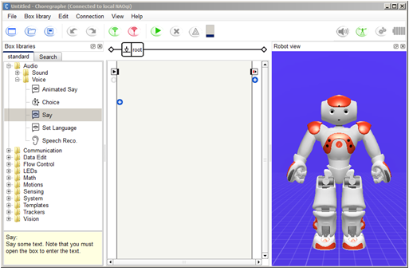
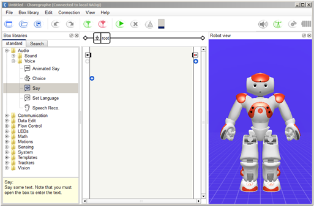
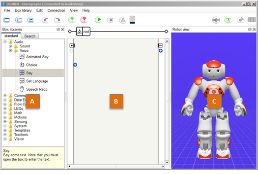
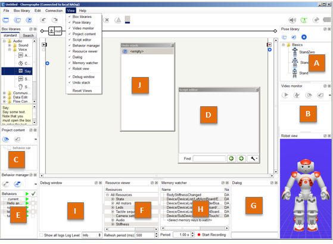

Main window¶
At startup, the following interface is displayed.
This interface contains a Menu Bar, a Toolbar and several Panels.
At startup, the following interface is displayed.
This interface contains a Menu Bar, a Toolbar and several Panels.
By default, 3 panels are displayed:
| Part | Name | Part | Name |
|---|---|---|---|
| A | Box libraries panel | C | Robot view |
| B | Flow diagram Panel |
You can find more advanced panels in the View menu:
| Part | Name | Part | Name |
|---|---|---|---|
| A | Pose library panel | F | Resource viewer panel |
| B | Video monitor panel | G | Dialog panel - Experimental |
| C | Project content panel | H | Memory watcher panel |
| D | Script editor panel | I | Debug window |
| E | Behavior manager panel | J | Undo stack panel |
To move a panel:
The buttons of the toolbar below the menu bar are shortcuts to actions that you will often need while creating behaviors in Choregraphe.
| Button(s) | Function |
|---|---|

|
Create a New project, Open or Save a Project. |

|
Undo and Redo last actions made in the diagram. |
Connect, Disconnect or Try to reconnect a robot. For more information about the connection, see Connection Management. |
|
| Play or Stop the opened Behavior. | |
| See the warnings and the errors that can occurs during the execution of your behavior. | |
Progress bar that indicates the behavior loading when you click on Play. This indicator can be:
|
|
| Enables you to set the volume of NAO’s speakers. | |
Activate / deactivate the Animation mode which enables you to easily manipulate the robot and store its position. For more information, see How to use the Animation Mode. This button can be:
|
|
Set on/off the stiffness of all the joints of the robot. This button can be:
|
|
Indicate the level of NAO’s battery. This indicator can be:
|